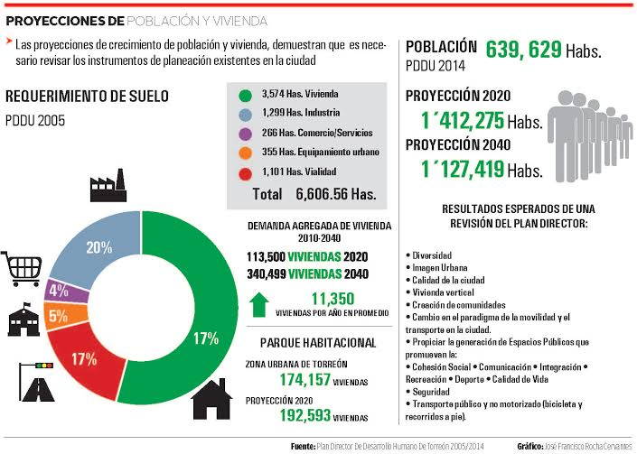

La planeación urbana tiene como una de sus funciones principales regular el crecimiento ordenado de la ciudad. ¿En dónde se encuentra la Planeación de la ciudad? En el Plan Director de Desarrollo Urbano.
La falta de planeación urbana sustentable, la carencia del control de la urbanización y la incorporación desordenada de suelo generan desarrollos habitacionales cada vez más alejados, creando traslados que requieren de más tiempo y más autotransporte.
Las proyecciones de crecimiento de población y vivienda, demuestran que es necesario revisar los instrumentos de planeación existentes en la ciudad y aplicar otros instrumentos de control urbano.
De acuerdo con el Plan Director de Desarrollo Urbano de Torreón de 2014, la población en el municipio crecerá a 1 millón 412 mil 275 habitantes para el año 2020. Es decir, se tendrá un aumento de 772,646 habitantes.
Asimismo la demanda de la vivienda continuará creciendo a 11,350 viviendas nuevas por año hasta 2020, lo cual refleja una necesidad de organización urbana mucho mayor a la que se tiene actualmente.
La realidad ha sido que las intensas demandas sociales de las últimas décadas, los intereses inmobiliarios, entre otras, han rebasado por mucho a la planeación urbana convencional, orientada a la zonificación de usos del suelo en toda la ciudad.
Desde la década de los 80's en la Zona Conurbada de la Laguna se realizaron los primeros Planes directores de Desarrollo urbano para Torreón, Gómez Palacio y ciudad Lerdo, (elaborados por parte de la Comisión de Conurbación de la Laguna).
Con el crecimiento demográfico de las ciudades y las demandas de habitación que se requerían, los problemas urbanos también emergieron desde dentro de Torreón y Gómez Palacio.
De 1980 a 2014 se contabilizan ocho documentos (Plan Director de Desarrollo Urbano) entre revisiones y actualizaciones. El último, publicado en 2014, estuvo a cargo de Urbis Interncional S.A. de C.V., de Monterrey; Nuevo León. La nueva revisión correrá a cargo del Instituto Municipal de Planeación de Torreón (IMPLAN).
Suelo y vivienda
La importancia de revisar el Plan Director de Desarrollo Urbano, se debe a la necesidad de sintetizar la compleja dinámica urbana, en un estudio-documento que la diagnostique, así como presentar propuestas fundamentadas con miras de construir prospectivamente un mejor orden y funcionamiento de la ciudad y que se refleje en inversiones económicas y mejor convivencia social.
La propuesta incluye un monitoreo del suelo urbano, en temas de suelo y vivienda como: crecimiento de familias, oferta de suelo habilitado, oferta de vivienda y reserva del suelo prevista en el Plan Director.
Asimismo se dará seguimiento a los procesos de restructuración en el ritmo de incorporación del suelo, cambios de uso de suelo, declinación de la ciudad interior y cambios en las densidades habitacionales.
Los objetivos del nuevo diagnóstico, serán revisar y actualizar los usos de suelo, monitorear el crecimiento de infraestructura y número de equipamientos que han cambiado en el territorio de la ciudad.
Realizar los análisis y proyecciones para los requerimientos de servicios y equipamientos urbanos que se tienen actualmente, asimismo conocer qué vocación de uso de suelo de lo analizado tiene la flexibilidad de cambios a lo establecido.
Encauzar la coincidencia entre el Plan Director de Desarrollo Urbano, el Plan Estratégico Metropolitano y el aprobado Reglamento de Desarrollo Urbano, Zonificación, Uso de Suelo y Construcción de Torreón.
Justificación del plan director de desarrollo urbano
La ciudad es un ente dinámico que cambia todos los días. Por ello es importante conocer la situación que guarda el territorio urbano, respecto a lo establecido en el Plan Director de Desarrollo Urbano, los fraccionamientos habitacionales que se han construido en los tres últimos años, los cambios de uso de suelo, la demanda de equipamientos requeridos y ubicación de los mismos.
Esto va de acuerdo con lo establecido en la Ley de Asentamientos Humanos y Desarrollo urbano del Estado de Coahuila (Artículo 56), para cumplir con la revisión de los Planes Directores de Desarrollo urbano de los Municipios cada tres años. Y responde a los lineamientos establecidos en el decreto de creación del Instituto Municipal de Planeación y Competitividad (Artículos 8, 9 fracción XI).
Resultados esperados de una revisión del Plan Director:
- Diversidad
- Imagen Urbana
- Calidad de la ciudad
- Vivienda vertical
- Creación de comunidades
- Cambio en el paradigma de la movilidad y el transporte en la ciudad.
- Propiciar la generación de Espacios Públicos que promuevan la:
- Cohesión Social
- Comunicación
- Integración
- Recreación
- Deporte
- Calidad de Vida
- Seguridad
- Transporte público y no motorizado (bicicleta y recorridos a pie).
Cronologia de el plan director de desarrollo urbano torreón y sus revisiones-actualizaciones.
| Año | Denominación oficial | Fecha de publicacion periódico oficial del estado | Elaboración/consultor |
|---|---|---|---|
| 1980 | Plan de Desarrollo de la Región Metropolitana de la Laguna, Plan de Ordenación de la Zona Conurbada de la Laguna | 29 Mayo de 1981/Diario Oficial de la Federación | Comisión de Conurbación de la Laguna. |
| 1981 | Plan Director de Desarrollo urbano del centro de población de Torreón. Derivado del Plan de Ordenación de la Zona Conurbada de la Laguna | Martes 17 de Noviembre de 1981. 05 de diciembre 1981, El Siglo de Torreón. | Comisión de Conurbación de la Laguna. |
| 1990 | Actualización del Plan Director de Desarrollo urbano de la ciudad de Torreón (primera) | Viernes 07 de Diciembre de 1990 | N/C |
| 1995 | Actualización del Plan Director de Desarrollo urbano de la ciudad de Torreón (segunda) | Martes 10 de Diciembre de 1996 | Centro de Estudios de Urbanismo y Arquitectura, S. A de C. V. ciudad de México |
| 1999 | Plan Director de Desarrollo Urbano Torreón 1999-2020 | 07 de Diciembre de 1999 | |
| 2003 | Plan Director de Desarrollo Urbano Torreón 1999-2020 (revisión) | 28 de Noviembre de 2003 | N/C |
| 2005 | Plan Director de Desarrollo Urbano del Municipio de Torreón, Coahuila (revisión) | Viernes 01 Agosto de 2008 | N/C |
| 2013 | Torreón, Plan Director de Desarrollo Urbano. | 14 de Febrero de 2014 | URBIS INTERNACIONAL S. A. de C.V. Monterrey, N.L. |
| 2016 | IMPLAN Torreón |
Elaboración propia con datos de Periódico Oficial del Estado de Coahuila.
Infografía
